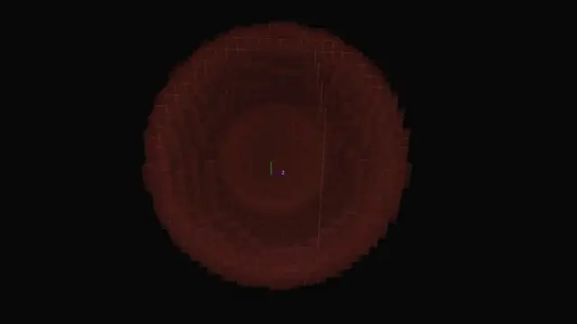
注：本篇专栏并没有全部基于源码的理论支撑，大部分由测试和经验向的推理得出，版本约涵盖了此实体出现后的每一个版本，大部分为安卓端，其中1.18.2版本测试环境为win端 以及特别去测试的现网易版（大雾
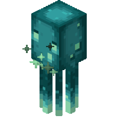
ID：glow_squid
生命值：10 （即摔落处死要13+）
实体尺寸：成年实体y0.95 xz：0.95 幼年个体y0.475 xz0.475
掉落物：荧光墨囊 1-6（ 1-3为常规掉落，随抢夺附魔等级递增1）
经验 1-3 （狼击杀无经验）
开始窒息时间：15s
因其尺寸，在±2^18处大小实体均可完全丢失碰撞箱下落。
1.16.230.56 群系：海洋，河流及其变种 维度：全 y63-
1.17.0.50 群系：无限制（蘑菇岛爬啊） 河流海洋63- 其他y30-
1.17.0.52 y63-
1.17.3/1.17.20.22 y0--64 竹子不能完全不阻挡其生成
1.18.0 y30-
现版本1.19.6 y30-
网易目前版本河流截图
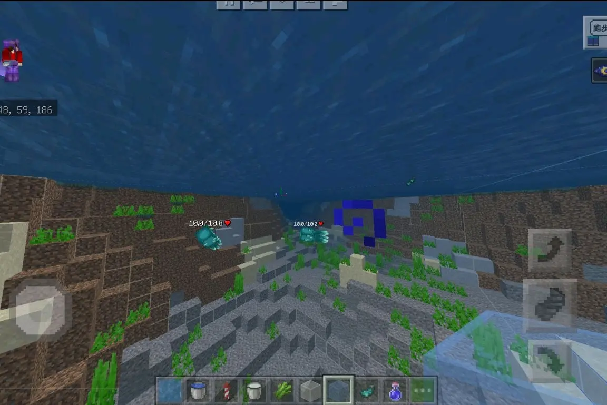
河流 海洋在洞穴生成情况下y63-即可生成 ，模拟6的情况下，河流上限为2，海洋的上限为4。----上限可能随模拟距离增加而增加
类型：洞穴
密度检测上限：4/2
上限计入：洞穴兽群？
光照强度：0-15
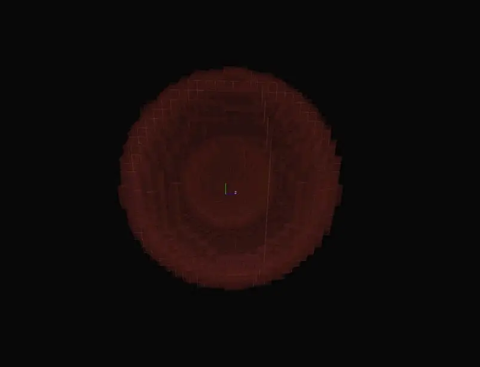
1.18.2模拟4末地 100 31 100 由近乎一个r12-22.5的空心一些点位推理出其生成范围可能为r24-45的空心球体（与怪物和动物生成范围相近）
测试过程如下
几个有代表性的方块测试
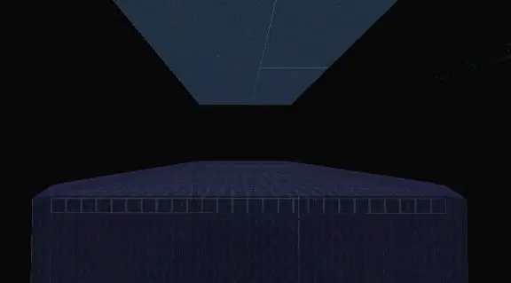
玻璃测试
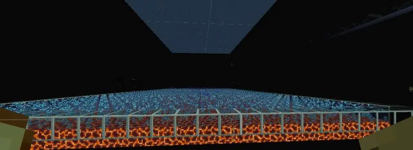
岩浆块测试
经过了更多的测试后 可以不完全归纳出其近似于方块对正常生物的性质。
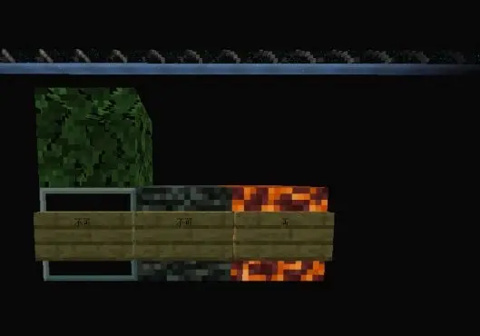
以下为列举的部分初生方块
可生成：刷怪笼 岩浆块 灵魂沙 珊瑚礁 数据更新方块
不可生成：树叶玻璃 基岩 末地门框 末地传送门 MB（利用btr测试）
水源处方块可为含水方块，气泡柱，水源。
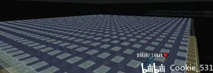
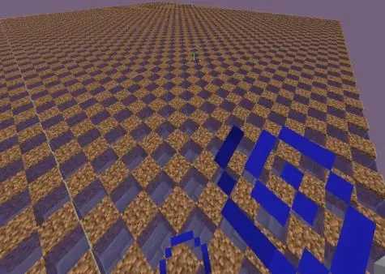
………………
通过改动生成架布局，我们可以得出一个确切的空间检测范围：
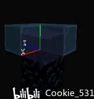
但是事情并没有那么简单，不同于以往的空间检测范围，发光鱿鱼会检测上方y+1的2*2的空间（白区） ，大部分透明方块都不阻挡。
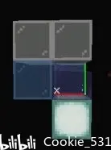
下图列举了一些不阻挡的方块，什么你问问绊线钩和线为什么被挡住了，👈😆
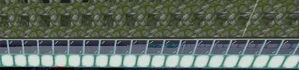
楼梯的测试
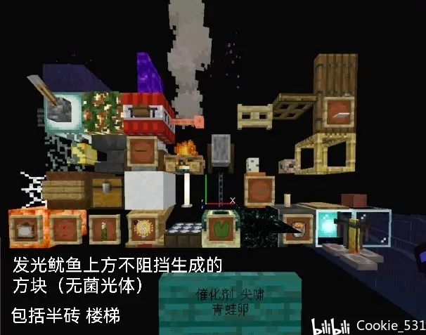
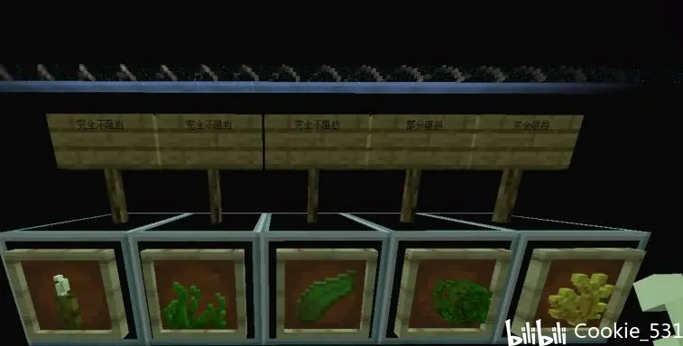
1.18.3一些植物等的性质
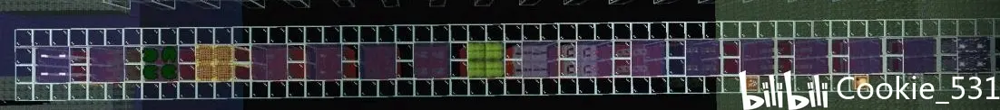
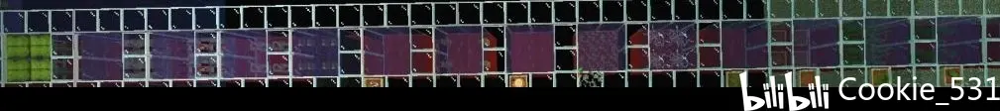
总结了一下1.16.2-1.19.6的一些方块对于发光鱿鱼的性质
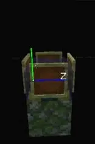
篝火 头颅 边界（上） 等摆烂架构
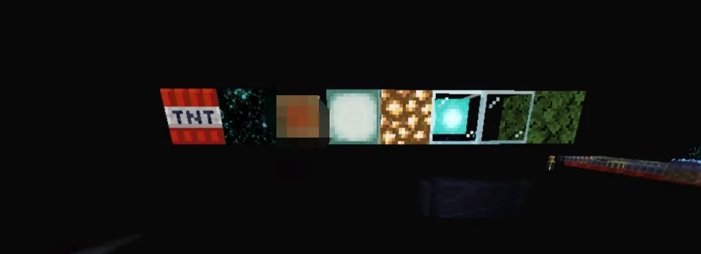
使用这几种廉价的方块交错排布即可
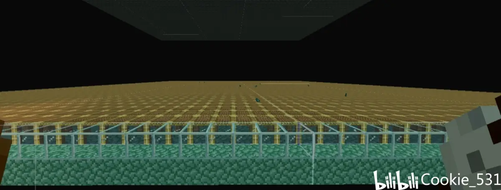
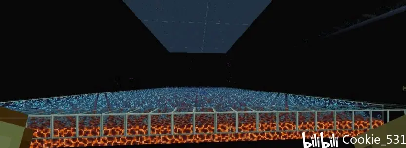
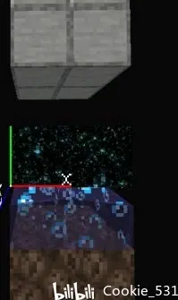
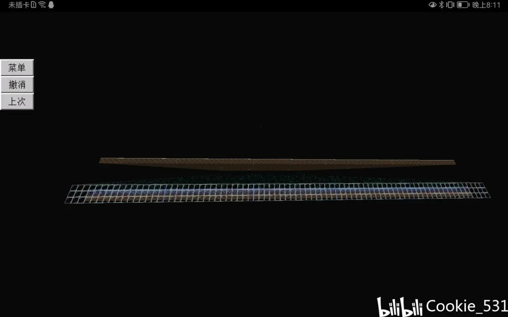
别的就懒得写了，本专栏仅抛砖引玉，👴继续摆，时不时上其他小号发点东西👀。